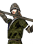

Lowland Scots levied into a militia to defend their settlement. Armed with pikes for good defence against cavalry, but lacking in armour.
These lowland Scots have been levied into local militias to defend their settlement and bolster armies. Given some training and equipped with a pike, these companies are useful against cavalry and can resist good infantry for a while at least. Their lack of armour and shields make them very vulnerable to archery though.
Quality: Militia
Type: Urban MilitiaFree upkeep in cities, reduced morale in the field.
Soldiers: 101
Attack: 1
Charge: 2
Weapon Type: Melee
Defense: 1
Armour: 1
Defense Skill: 0
Shield: 0
Hit Points: 1
Recruitment Cost: 280
Upkeep: 200

 Town Watch
Town Watch
 Town Guard
Town Guard City Watch
City WatchScots Pike Militia are recruited in a City with a City Watch and available after the Partial Plate event (about the early 14th Century -- around 1310-1310)